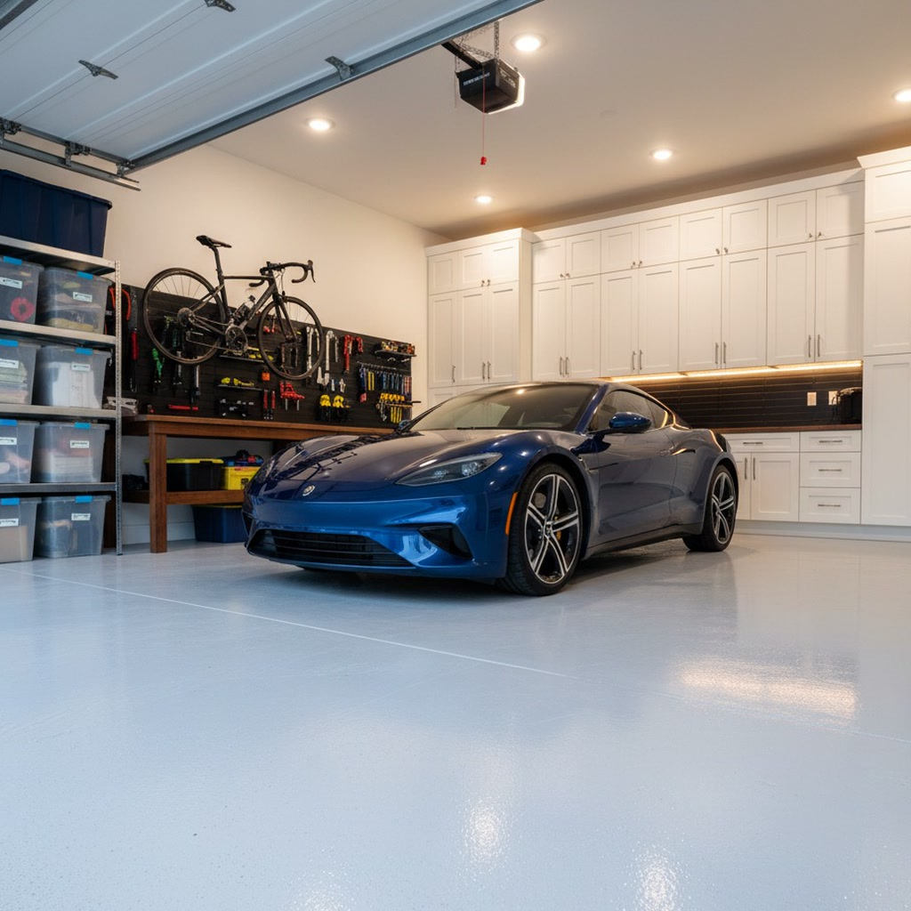
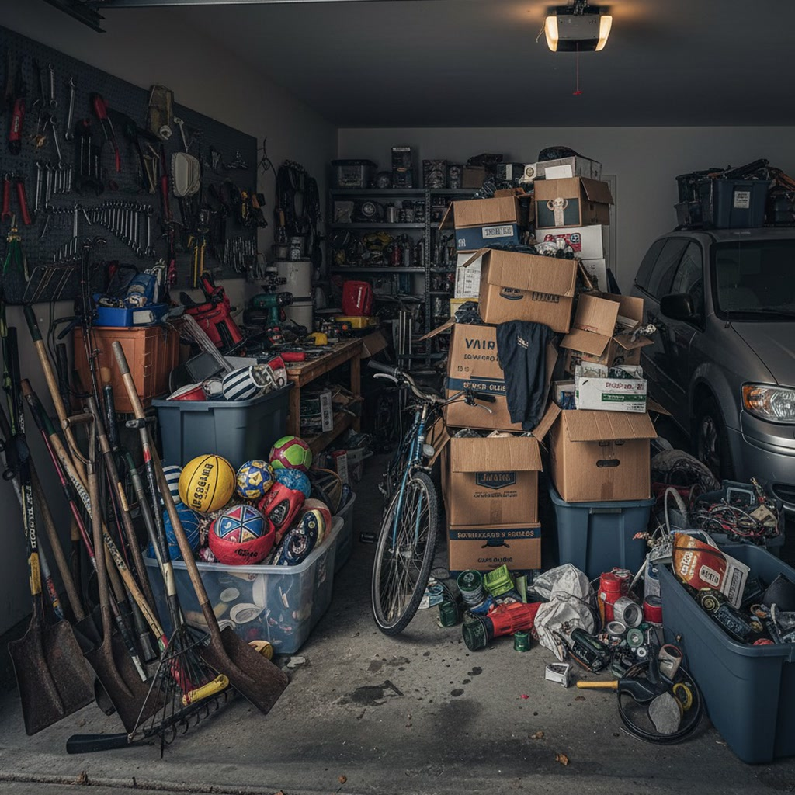

The space above your hood is the biggest empty shelf in a Calgary garage. We install overhead
garage storage racks that hang from the ceiling structure, clear the door and the opener, and
hold the bins you touch twice a year. Before we quote, we check what your ceiling was built to
carry, because the rating printed on the rack box says nothing about the trusses it hangs from.
An overhead ceiling rack runs $380 to $600 installed per 4x8 unit, the range listed on our
garage storage solutions page. A retail kit
on its own costs about $120 to $300. To get a fixed price, text three photos to
(587) 804-9266 or email
info@garagescape.ca: the ceiling, the garage door fully
open, and the vehicle you park inside.
Most pages about overhead garage storage are product listings. This one covers the four things
that decide whether a rack works in a Calgary garage: the structure above the drywall, the
clearances around the door, what you put on it, and what a winter in an unheated garage does to
the things stored up there.
What Is Above Your Garage Ceiling
An overhead rack is four or six steel posts lagged into wood you can't see. Calgary garages have
three common ceilings, and each one changes how a rack is hung.
Roof trusses with nothing above
This is the ceiling in most detached lane garages and in attached front garages that have only
roof over them. The drywall is screwed to the bottom chord of each truss, usually 24 inches
apart. A truss is engineered as a unit for a stated load, and the design drawing lists what the
bottom chord was meant to carry. Unless the builder ordered trusses with a storage allowance,
that chord was sized to hold the drywall and insulation and to tie the roof together. In February
the same trusses are also carrying the snow on the roof.
So we spread a rack across as many trusses as the layout allows, keep the load light, and ask for
the truss drawing when a client wants more than seasonal bins up there. Many homeowners find a
copy in the new-home binder or stapled inside the attic hatch.
A bonus room above the garage
Many two-storey homes in Calgary's newer suburbs put a bonus room over the garage. The garage
ceiling is then the underside of a floor, built to carry people and furniture, and in many newer
homes it is framed with engineered I-joists. An I-joist has a thin web between two flanges, and
the manufacturer's literature sets how loads may hang from the bottom flange. The fastening
method that suits a solid 2x10 is the wrong one here. We find out which joist you have before we
choose hardware.
Open framing in an unfinished garage
Older detached garages in the inner city often have no ceiling drywall. You can see the rafters
or trusses, which makes inspection easy and blocking simple to add. It also shows the history:
sagging ties, old plywood platforms and decades of lumber stored across the framing. We clear and
look before we add anything.
When we say no
If we can't confirm what a ceiling was built to carry, we don't hang a rack from it. The same
bins go on wall-mounted steel shelving above head height, which our
custom shelving page covers. A structural engineer or
the truss manufacturer can settle the question if you want the ceiling space badly enough to
ask them.
Door, Opener and Vehicle Clearance
A rack has to live in the gap between the ceiling and everything that moves. A common 4x8 retail
kit, the Fleximounts model sold through Lowe's, adjusts to hang 22 to 40 inches below the
ceiling and is rated by its maker for 600 pounds. Whether 22 inches of drop leaves room for your
SUV depends on five measurements.
What we measure before quoting an overhead rack
Measurement
Why it matters
Floor to ceiling
Sets how much drop the rack can have. Low ceilings in older single garages often rule out a rack over the car.
Ceiling to the top of the open door
A sectional door rolls back along the ceiling. A rack above it has to fit in the space the door leaves, or sit past the end of the tracks.
Opener rail and motor
A centre-mounted opener splits the ceiling in two. Racks go either side of the rail, clear of the motor and the emergency release cord.
Tallest vehicle, with the hatch open
A pickup, a roof box or a raised liftgate reaches higher than the roofline. We measure the vehicle you own, not a typical one.
Lights, attic hatch and heater
A rack shouldn't block the attic access, shade the only light, or sit in front of a ceiling-hung gas heater.

An example garage, not a client's: the open door covers the front of the ceiling and the opener hangs mid-ceiling. A rack here would go further back, above the hood.
The best spot in most attached double garages is above the hood, against the wall your bumper
faces. The door never reaches that far back and you walk under it less. The second spot is above
the open door, which works when the ceiling is high.
What Belongs Overhead and What Doesn't
Overhead storage is for things that are light, bulky and used a few times a year. The mistake we
see most is the opposite: the heaviest things in the garage sent to the ceiling because they are
in the way.

Sort first, then decide what goes upExample images, not a client's garage. Cardboard on the floor becomes labelled totes. The totes you open every month stay on shelving at arm's reach, and only the seasonal ones go to the ceiling.
Where common garage items should go
Item
Overhead rack?
Why
Christmas and holiday decorations
Yes
Light, bulky, one trip up and one trip down a year
Camping gear, sleeping bags, coolers, camp chairs
Yes
Used May to September, then out of the way
Skis, snowboards, hockey nets, pool toys
Yes
Long, awkward shapes that waste wall space
Winter or summer tires on rims
No
A sedan set weighs roughly 160 to 200 pounds and SUV sets more. A wall-mounted tire rack at chest height is safer to load
Paint, stain and other liquids
No
Latex paint is ruined by freezing in an unheated garage, and a leak overhead lands on the car
Gasoline and propane
No
Fuel stays low, in approved containers, away from any heater
Tool chests, bags of salt, boxes of books
No
Dense weight belongs on the floor or a bottom shelf
Anything you use monthly
No
If it needs a ladder every few weeks, it ends up back on the floor
Before you load a rack, weigh one full tote on a bathroom scale and multiply. Twelve totes at 25
pounds each is 300 pounds, half the rating of the common kit above before the ceiling's own limit
is considered. The heavy and hazardous items in the table go into closed storage lower down,
which is what our garage cabinets page is about.
Overhead Storage Through a Calgary Winter
Warm air rises, so the ceiling is the mildest part of a heated attached garage. In an unheated
detached garage it makes no difference: the whole space sits well below freezing for weeks at a
time, and a chinook can lift it above zero in an afternoon. That swing shapes what we put up
there.
Totes with lids, never cardboard. Cardboard soaks up the damp air that follows a chinook and sheds dust onto the car. We move everything into lidded totes before it goes up.
Nothing that freezes or leaks. Paint, cleaners, canned goods and liquids of any kind stay off the rack.
Labels you can read from the floor. We label the end and the underside edge of each tote, so you know which one to bring down without climbing.
A swap that matches the seasons. Camping and bike gear go up in October when the winter tires go on. Decorations come down in late November. The reverse happens in April.
A clear landing spot. We leave floor space where the ladder stands, out of the meltwater path, so you aren't loading bins from a wet slab.
Plastic gets brittle in deep cold. In a detached garage we suggest bringing totes down on a mild
day and lowering them by hand.
Airdrie, Chestermere, Cochrane and Okotoks
We install overhead garage storage outside city limits on the same terms. Our
Airdrie garage organization page explains why
overhead racks above the hood line suit the town's new-build attached garages, and the
Chestermere page covers overhead platforms
for lake gear: tubes, life jackets and wakeboards that sit unused from October to May. For
Cochrane and Okotoks, start with
garage decluttering in Cochrane or
garage decluttering in Okotoks, because a rack
installed over a full garage only stores the overflow.
Overhead Garage Storage Installation Cost
The $380 to $600 installed range covers one 4x8 rack on a ceiling we can fasten to directly.
Five things move a quote inside or above that range:
Number of racks. A double garage often takes two above the hood. The second costs less to add on the same visit.
Ceiling height. Ten-foot ceilings need taller ladders and longer drops. Low ceilings may need a shallower rack.
Blocking. If the framing doesn't line up with the rack's posts, we add blocking, which is easy in open framing and slower through drywall.
Clearing first. Organization starts around $299. If we can't set a ladder down, that work comes first.
What goes with it. Racks are often one line in a larger job with shelving, a tire rack and wall track. Our Calgary garage organization page covers the full scope.
Buying a kit and hanging it yourself saves the labour. What you pay us for is finding the
framing, checking what it can carry, setting the height around your door and vehicle, and
loading it so the weight is spread. The
shelving solutions guide
compares ceiling racks with wall track and freestanding shelving if you are still choosing.
How the Installation Goes
Photos and a fixed price. Send the ceiling, the open door and your vehicle. We reply with a layout and a quote.
Find the structure. On site we locate every truss or joist the rack will hang from, confirm which way they run, and check for wiring, ducts and the attic hatch.
Set the height. We mark the drop with your vehicle parked and the door open, then again with the hatch raised.
Hang and level. Posts are lagged into framing, never into drywall alone, and the deck is levelled.
Load and label. We load the totes with you, heaviest toward the posts, and label them so they can be read from the floor.
A single rack takes about two to four hours. Text photos to
(587) 804-9266 to get a date.
Overhead Garage Storage Questions
How much does overhead garage storage cost in Calgary?
An overhead ceiling rack runs $380 to $600 installed per 4x8 unit, which is the range on our garage storage solutions page. A retail rack kit on its own costs about $120 to $300. The installed price moves with the number of racks, the ceiling height and whether the ceiling needs blocking. We quote from photos and the price is fixed before work starts.
How much weight can an overhead garage rack hold?
The rack and the ceiling have separate limits, and the lower one is the answer. A common 4x8 retail kit is rated by its maker for 600 pounds. The ceiling it hangs from may be rated for less, because many garage roof trusses were ordered with no storage allowance on the bottom chord. We plan racks for light, bulky seasonal items and keep heavy things on the wall or the floor.
Will an overhead rack fit above my garage door?
Usually, if the ceiling is high enough. The rack has to sit below the ceiling and above the open door, the door tracks and the opener rail, or else in the part of the ceiling the door never reaches. We measure the open door, the opener and your tallest vehicle before we set the height.
Can you install overhead storage if there is a bonus room above the garage?
Often, but the method changes. Under a bonus room the garage ceiling is a floor system, in many newer homes built with engineered I-joists, and the joist maker sets the rules for hanging loads from the bottom flange. If we cannot confirm what the ceiling was built to carry, we do not hang a rack from it and we put the same bins on wall-mounted shelving.
Can winter tires go on an overhead rack?
We don't recommend it. A set of four sedan tires on rims weighs roughly 160 to 200 pounds and SUV sets weigh more, which uses up much of a rack's capacity in one corner and means lifting each wheel over your head twice a year. A wall-mounted tire rack at chest height is safer and faster for the October and April swaps.
How long does overhead garage storage installation take?
A single rack or wall system takes about two to four hours once the garage is clear enough to set up ladders. Two or three racks in a double garage usually fit in one visit. If the garage needs decluttering first, we do that before the install.
Do you install overhead storage in Airdrie, Chestermere, Cochrane and Okotoks?
Yes. We install overhead garage storage across Calgary and in Airdrie, Chestermere, Cochrane and Okotoks. Text photos of the ceiling and the open garage door with your address and we will confirm the visit and the price.